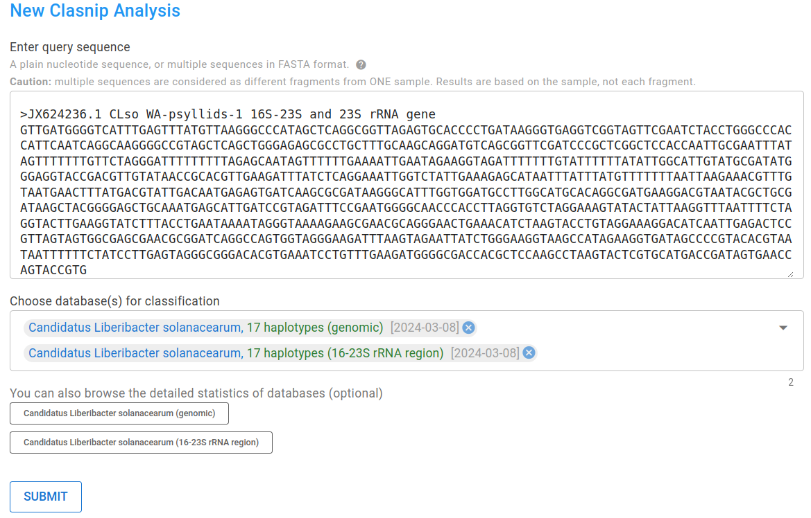
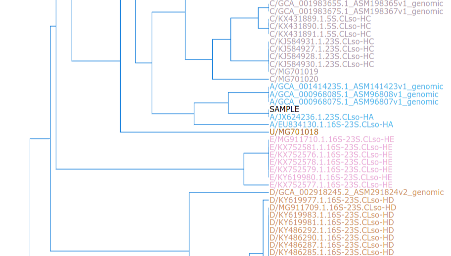
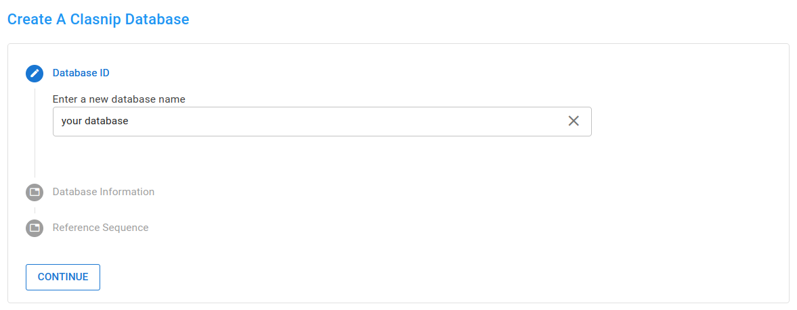

Clasnip Documentation
Clasnip (www.clasnip.com) is an easy-to-use web-based platform for the classification and similarity evaluation of closely related microorganisms at interspecies and intraspecies levels.
At the current stage, it provides reliable classification for quarantine and regulatory pathogens.
Citation and technical details
Chuan J, Xu H, Hammill DL, Hale L, Chen W, Li X. 2023. Clasnip: a web-based intraspecies classifier and multi-locus sequence typing for pathogenic microorganisms using fragmented sequences. PeerJ 11:e14490 https://doi.org/10.7717/peerj.14490
Features
Just input nucleotide(s) and choose databases.
- No matter they are PCR-amplicons, genes, fragmented sequences, contigs, or even whole genomes, as long as they share similarity with databases.
- No need to align or truncate sequences. 
Clear classification report with visualizations
Tabular classification summary
Dendrogram and heatmap show the placement of your sample 
MLST table showing SNP/INDEL and their prevalence in database

Database of your interest not found?
Create one by yourself, and review classification performance in a glance like an expert (login required)
Guided database-creating experience 
Auto-generated heatmaps and dendrograms
Review performances (TPR / sensitivity, TNR / specificity, etc.)